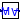

Package with conversions for sensor models
Extends from Modelica.Icons.Package (Icon for standard packages).
| Name | Description |
|---|---|
|  To_VolumeFraction | Conversion from mass fraction to volume fraction |
| Collection of models that illustrate model use and test models |
Conversion from mass fraction to volume fraction
This component converts mass fraction to volume fraction for an ideal gas.
The default value for the parameter MMBul
assumes that the bulk medium is air.
The model assumes that the concentration
of the measured substance is small enough to be neglected in the molar mass
of the mixture.
| Type | Name | Default | Description |
|---|---|---|---|
| MolarMass | MMMea | Molar mass of measured substance [kg/mol] | |
| MolarMass | MMBul | Modelica.Media.IdealGases.Co... | Molar mass of bulk medium [kg/mol] |
| Type | Name | Description |
|---|---|---|
| input RealInput | m | Mass fraction |
| output RealOutput | V | Volume fraction |